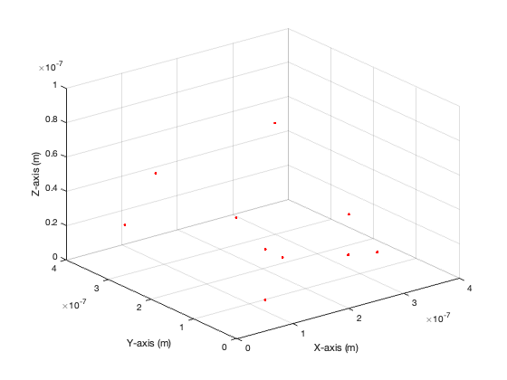

% ECE 235 % % Lab 1 - Part 2 % Sidorian Pandovski % PART 1: % 2) a = [1 3 7 ; 2 5 6]; b = [4 7 9 ; 8 1 3 ; 1 1 1]; c = [1-j 1+j 3 ; 2-4j 8+3j 6j ; 0 0 7]; % Checkpoint, ran correctly % 3) d = b*c; e = inv(b)*c; f = a*b; g = b+c; h = b*(a.'); i = a*b(1:3, 1:2); % Checkpoint, ran correctly % PART 2: % ran fopen Lab1_data.mat -> returned 3 % ran fprintf Lab1_data.mat -> returned scanner % ran who's into scanner -> returned all variables within the project % ran whos -file Lab1_data.mat -> returned proper window % PART 3: xx = linspace(-5,5,400); fx1 = sin(3*pi*xx).*exp(-xx.^2); fx2 = zeros(size(xx)); for ii=1:length(xx) if abs(fx1(ii)) < 0.5 fx2(ii) = fx1(ii); elseif fx1(ii) > 0.5 fx2(ii) = 0.5; elseif fx1(ii) < 0.5 fx2(ii) = -0.5; end end jj = 1; while jj > 0 if fx1(jj) > fx2(jj) ret = xx(jj); break end jj = jj + 1; end % returned 178 as the first index value % PART 4: plot(xx,fx1,xx,fx2) xlabel('x') ylabel('f(x)') legend('fx1','fx2') print('-djpeg','spandovski_Lab1_fig.jpg') %if length(vx) == size(f0,1) && length(vy) == size(f0,2) % f0 = f0.'; % transpose if f0 came in swapped %end % Create grid for 3D plots [VX, VY] = meshgrid(vx, vy); % 1) imagesc figure imagesc(vx, vy, f0); axis xy; xlabel('v_x (m/s)'); ylabel('v_y (m/s)'); title('f_0(v_x, v_y)'); colorbar; %exportgraphics(gcf,'f0_imagesc.png','Resolution',300); % 2) waterfall figure waterfall(VX, VY, f0); xlabel('v_x (m/s)'); ylabel('v_y (m/s)'); zlabel('f_0 (unitless)'); title('f_0(v_x, v_y) - Waterfall'); colorbar; %exportgraphics(gcf,'f0_waterfall.png','Resolution',300); % 3) surf figure surf(VX, VY, f0); shading interp; xlabel('v_x (m/s)'); ylabel('v_y (m/s)'); zlabel('f_0 (unitless)'); title('f_0(v_x, v_y) - Surface'); colorbar; %exportgraphics(gcf,'f0_surf.png','Resolution',300); % MOVIE SCRIPT movObj=VideoWriter('Pandovski_HW1_Movie.avi') movObj.FrameRate = 10; %can change frame rate, obviously open(movObj) figure(5) for j=1:100 plot3(xpos(j,:), ypos(j,:), zpos(j,:),'r.'); grid on; axis([0 4e-7 0 4e-7 0 1e-7]) xlabel('X-axis (m)'); ylabel('Y-axis (m)'); zlabel('Z-axis (m)'); pause(0.1); writeVideo(movObj,getframe(gcf)) end close(movObj)
movObj =
VideoWriter
General Properties:
Filename: 'Pandovski_HW1_Movie.avi'
Path: '/Users/sidpandovski/UW Madison/ECE 235'
FileFormat: 'avi'
Duration: 0
Video Properties:
ColorChannels: 3
Height: []
Width: []
FrameCount: 0
FrameRate: 30
VideoBitsPerPixel: 24
VideoFormat: 'RGB24'
VideoCompressionMethod: 'Motion JPEG'
Quality: 75
